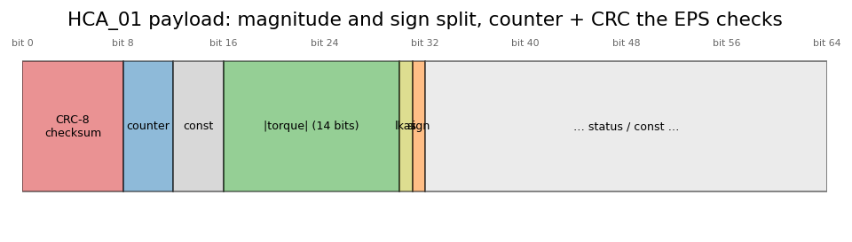

The platform layer — one car behind an interface#
Everything upstream — vision, planner, control — speaks in physics: a curvature, a wheel angle, a
torque in cNm. None of it knows the car is a Volkswagen. That knowledge lives in exactly one place, the
platform layer, and this chapter is how it is built: the brand-neutral interface, the decode path
that turns CAN frames into a CarStateView, the encode path that turns a torque request into a valid
HCA_01 frame, and the panda supervisor that decides whether that frame is even allowed to leave.
The design rule is one sentence: the brand is one implementation of an interface, not the
architecture. Adding Toyota TSS2 once changed no line of Planner or Control. What follows is why
that holds.
The interface#
platform::CarPlatform (include/adas/platform/car_platform.h) is a pure virtual class with four
groups of methods, and reading its shape tells you the whole contract:
read the bus isAllowedRxAddress · update(frames) · carState · stateView
write the bus apply(CarControl) → frames · steerLimits · longLimits
what's allowed configureSafety · safetyTick · ignition · safetyModelOk · lateralActuationAllowed
lifecycle init · dbcAssetName · defaults · resetPandaState
Planner and Control see only stateView() — a CarStateView, brand-neutral: speed, steering
angle, yaw rate, whether the driver is on the wheel, whether stock cruise is engaged. They never see a
CAN address or a signal name. VolkswagenMqb (vw_platform.cpp) is the one implementation the config
key vehicle.name selects; the platform service holds a unique_ptr<CarPlatform> and calls the
interface, nothing brand-specific.
Decode: from frames to a CarStateView#
Incoming frames pass one cheap gate first — isAllowedRxAddress drops anything not on the car’s
receive list before any decoding, so a busy bus costs nothing per irrelevant frame. What survives goes
to MqbCarStateDecoder, a switch on the address (mqb_car_state_decoder.cpp):
address |
frame |
what it gives |
|---|---|---|
|
ESP_02 |
four wheel speeds → filtered |
|
LWI_01 |
steering-wheel angle and rate, with sign |
|
ESP_05 |
yaw rate, with sign |
|
ESP_09 |
brake pressure, driver-braking flag |
|
— |
TSK / cruise status → is stock ACC engaged |
|
LH_EPS_03 |
EPS HCA status — is the rack accepting torque |
The values are not extracted by hand-written bit math but through a DBC parser
(utils/can_parser.h): extractSignal(frame, "LWI_Lenkradwinkel") returns the physical value using
the same vw_mqb_2010.dbc comma ships. That choice has a subtle safety property, and the parser makes
it explicit — one malformed DBC line is skipped, not fatal:
# The parser's contract, in miniature: a bad line must not void the whole database.
def load_dbc(lines):
signals, skipped = {}, 0
for ln in lines:
try:
name, start, length, scale = parse_dbc_line(ln) # raises on a malformed line
signals[name] = (start, length, scale)
except ValueError:
skipped += 1
return signals, skipped
def parse_dbc_line(ln):
# a real SG_ line: "SG_ LWI_Lenkradwinkel : 0|13@1+ (0.1,0) ..."
if not ln.strip().startswith("SG_"):
raise ValueError("not a signal line")
name = ln.split()[1]
return name, 0, 13, 0.1
sig, skipped = load_dbc(["SG_ LWI_Lenkradwinkel : 0|13@1+ (0.1,0)",
"GARBAGE that will not parse",
"SG_ ESP_Gierrate : 0|14@1+ (0.01,0)"])
print(f"loaded {len(sig)} signals, skipped {skipped} bad line(s)")
Why it matters: a DBC that fails to load whole leaves the car undecoded, which from the outside
looks exactly like a car that is not talking — the wrong thing to conclude from a spacing difference on
one unrelated message. update() returns true when any decoded value changed, and the platform service
publishes vehicle/state on that.
Encode: building a legal HCA_01#
apply(CarControl) turns the brand-neutral request (torque in cNm, lateral active, HUD lane bits) into
the frames this car’s EPS will accept. For steering that is HCA_01 at address 0x126, and three
things about it are non-negotiable — the brand owns all three, which is exactly why they live here and
not in Control:
magnitude and sign are split: the 14-bit field carries
|torque|, a separate bit carries the sign. Torque is clamped to ±STEER_MAX(300) before it is packed.a 4-bit rolling counter increments every frame; the EPS rejects a frame whose counter did not advance.
a CRC-8 checksum over the payload, VW’s “8H2F” polynomial
0x2F, init0xFF, final XOR0xFF— then XORed with a per-counter secret byte. ForHCA_01that secret is a constant0xDA(forGRA_ACC_01, the cruise-button frame, it genuinely varies by counter); get it wrong and every frame is silently dropped by the EPS.
def crc8_2f(data):
"""VW MQB 8H2F CRC over bytes 1.. : poly 0x2F, init 0xFF, final XOR 0xFF, plus a counter secret."""
HCA_SECRET = [0xDA] * 16 # HCA_01's secret is a constant 0xDA (GRA_ACC_01's varies)
crc = 0xFF
for b in data[1:]:
crc ^= b
for _ in range(8):
crc = ((crc << 1) ^ 0x2F) & 0xFF if crc & 0x80 else (crc << 1) & 0xFF
crc ^= HCA_SECRET[data[1] & 0x0F] # constant here, so counter-independent
for _ in range(8):
crc = ((crc << 1) ^ 0x2F) & 0xFF if crc & 0x80 else (crc << 1) & 0xFF
return crc ^ 0xFF
def build_hca(torque_cnm, lkas_on, counter):
torque = max(-300, min(300, torque_cnm))
d = bytearray(8)
d[1] = ((counter & 0x0F) << 0) | (0x3 << 4) # counter in low nibble, a constant in the high
mag = abs(torque)
d[2] = mag & 0xFF
d[3] = ((mag >> 8) & 0x3F) | (0x40 if lkas_on else 0) | (0x80 if torque < 0 else 0)
d[0] = crc8_2f(d) # checksum goes in byte 0, last
return d
f0 = build_hca(120, True, 3)
f1 = build_hca(120, True, 4)
print("counter 3:", f0.hex(), " counter 4:", f1.hex())
assert f0[0] != f1[0], "same magnitude, different counter → different checksum"
print("checksum changed because the counter sits in the CRC payload — not because of the secret,")
print("which is constant for HCA_01. A wrong or wrongly-varying secret (GRA_ACC_01) drops every frame.")
LDW_02 (the dashboard lane HUD) and the three ACC frames — ACC_06, ACC_07, ACC_02 — are built
the same way; the two acceleration frames are the MQB messages whose secret genuinely changes with the
counter, so a table of sixteen bytes replaces the constant. They go out only when vehicle.long_control
is on, together with the panda’s longitudinal flag — see Longitudinal planner.
{kind=link}

Fig. 33 HCA_01: torque magnitude and sign split across a 14-bit field and a sign bit, with the rolling counter and CRC the EPS validates.#
Encode: the acceleration frames#
Control publishes the acceleration in the same SteerCommand message as the torque. The platform gates
it on the panda’s controls_allowed — there is no always-on longitudinal the way there is always-on
lateral — and the VW port lays it into ACC_06 (0x122, for the motor), ACC_07 (0x12E, for the ESP)
at 50 Hz and ACC_02 (0x30C, the cluster) at 16.7 Hz. The field ACC_Sollbeschleunigung_02 carries the
request in 0.005 m/s² steps from −7.22; 3.01 is the bus’s word for “nothing asked”, and the panda
checks that ACC_Folgebeschl reads exactly 3.02 in every ACC_07. Counter and CRC follow HCA_01’s
recipe, with per-message secret tables (ACC_06 and ACC_07 are the two MQB frames whose secret varies
with the counter).
One flag ties it together: FLAG_VOLKSWAGEN_LONG_CONTROL in the panda’s safety parameter. With it the
panda accepts our three frames and stops forwarding the radar’s own — the takeover is one switch, so
vehicle.long_control: true sets both the flag and the frames, and off leaves the stock ACC untouched.
What the flag needs on the car is honest to state: a panda at the gateway harness (at the camera harness
the radar’s frames never pass through it), a car with an ACC radar for the motor and ESP to be coded for
the request, and a panda firmware built with ALLOW_DEBUG. Our own Golf has no radar, which is why this
chapter’s road data comes from a simulator.
Allowed: the panda supervisor#
A correctly built frame still must not leave unless the car is on and the panda is in the right safety
mode. PandaSafetySupervisor (panda_safety_supervisor.cpp) owns that, and it is deliberately a layer
below encode — the platform builds frames every tick, the supervisor decides whether the board will
pass them:
safety model must be
kVolkswagen(15);safetyModelOk()is false otherwise and no torque is sent — a wrong mode is treated as a fault, not worked around;alternative-experience bits (e.g. disable-disengage-on-gas) are asserted on the board at init;
ignition is debounced with voltage hysteresis, so a dip does not toggle engagement;
a heartbeat is sent every supervisor tick, or the panda enters its own safe mode.
This is also what makes the panda survivable across a phone sleep. When a re-opened USB descriptor is
seated into the running native layer, resetPandaState() forgets board state — safety model and
alt-exp live on the board and must be re-asserted — while keeping decoded car state and the set
speed. Two failed reseats in a row escalate to a full restart; a single one is invisible to the
controllers.
Rates, and where it all runs#
The platform service (services/platform.cpp) runs three timers: rx and tx at 10 ms, state
at 100 ms. rx drains the panda and decodes; tx builds and sends apply()’s frames; state publishes
vehicle/state, and the supervisor tick rides alongside publishing panda/health. Everything above in
this chapter is called from those three callbacks and nowhere else — which is what lets bag replay and
pyadas exercise the identical decode/encode with no panda attached.
Acceptance#
the DBC miniature loads the good signals and counts the bad line instead of failing;
the HCA builder produces a different checksum at two counters — and you can state why: the counter is part of the CRC payload, while the secret itself is constant for
HCA_01and varies by counter forGRA_ACC_01,ACC_06andACC_07;one sentence each: why
stateView()is brand-neutral, and whyresetPandaState()forgets board state but keeps car state.
For depth#
platform/car_platform.h— the interface;platform/volkswagen/— the one implementation.docs/PORTING.md— the procedure for adding a second car behind this interface.Angle control — the torque this layer receives, and the panda rate limiter it must respect.
Next: FCW / AEB / LDW